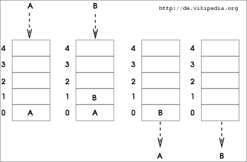
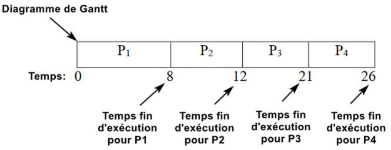
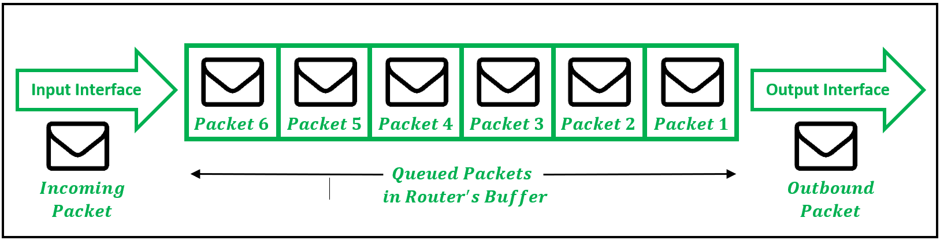

Une file est une structure de données abstraite qui organise les éléments selon le principe FIFO
(First In, First Out), traduit en français par « premier entré, premier sorti ».
Cela signifie que le premier élément ajouté à la file sera le premier à en être retiré, et que les nouveaux éléments sont ajoutés à la fin de la file.
Cette organisation permet de traiter les données dans l’ordre exact de leur arrivée, ce qui est essentiel dans de nombreux systèmes informatiques.
Les files se comportent un peu comme une file d’attente dans la vie réelle.
Par exemple, devant un guichet, les usagers arrivent en queue de file et quittent la file par sa tête.
Chaque personne attend son tour, et aucun élément ne peut «sauter» la file.

Illustration : Exemple de représentation d'une file
Voici un exemple d'implémentation d'un élément dans une file d'entiers dans le langage C :
typedef struct {
int capacite; // Capacité maximale de la file
int taille; // Nombre d'éléments actuellement dans la file
int* file; // Tableau dynamique pour stocker les éléments
}*File;
Ou encore un autre exemple de l'implémentation d'une file dans le langage Python:
class File:
def __init__(self):
self.file = [] # Liste qui représente la file
Cette structure de données permet d’effectuer les opérations de base suivantes :
Opérations principales d’une file
Opération
Description
Enfiler
Ajoute un nouvel élément à la fin de la file. Respecte le principe FIFO, le premier élément ajouté reste en tête et le nouveau devient le dernier.
Défiler
Supprime l’élément en tête de la file. Libère la mémoire et met à jour la tête pour que le prochain élément devienne le premier.
Principales utilisations des files
Les files sont des structures de données très utiles en informatique, car elles permettent de traiter les éléments dans l’ordre d’arrivée
(FIFO : First In, First Out). Voici les quatre principales utilisations des files, avec des détails et exemples pour chaque domaine :
1. Gestion des processus
Dans les systèmes d’exploitation, plusieurs programmes peuvent être prêts à s’exécuter en même temps.
Les fichiers de processus utilisent des files pour organiser ces programmes.
Les processus sont retirés de la file et exécutés dans l’ordre d’arrivée, ce qui assure une répartition équitable des ressources du processeur.
Exemple : Si trois programmes P1, P2 et P3 arrivent dans la file, par exemple :
P1 arrive dans la file à 9h
P2 arrive dans la file à 10h
P3 arrive dans la file à 8h
alors les programmes seront exécutés dans l’ordre P3 → P1 → P2.

Exemple d'une file de processus
2. Gestion des entrées/sorties (E/S)
Les périphériques lents, comme les imprimantes, les disques durs ou les claviers, ne peuvent pas traiter toutes les requêtes immédiatement.
Une file permet de stocker les requêtes et de les traiter dans l’ordre d’arrivée, évitant la perte de données et garantissant un traitement séquentiel.
Exemple : Une imprimante reçoit plusieurs documents à imprimer. Chaque document est placé dans la file, et le premier ajouté est imprimé en premier.
3. Réseaux informatiques
Dans les réseaux, les routeurs et commutateurs reçoivent des paquets de données de différentes sources.
Les files permettent de stocker ces paquets temporairement avant de les envoyer vers leur destination,
garantissant que l’ordre des paquets est respecté et que le réseau ne se surcharge pas.
Exemple : Les paquets d’un flux vidéo sont mis dans une file avant d’être transmis au lecteur, évitant les pertes ou désordres.

Exemple d'une file transportant des paquets
4. Algorithmes et programmation événementielle
Les files sont largement utilisées dans les algorithmes et la programmation d’interfaces.
Par exemple, dans le parcours en largeur (BFS) d’un graphe ou d’un arbre, une file stocke les nœuds à explorer dans l’ordre correct.
De même, les interfaces graphiques utilisent des files d’événements pour gérer les clics, frappes clavier ou mouvements de souris,
assurant que chaque événement est traité dans l’ordre où il se produit.
Exemple : Dans un jeu, si le joueur clique, appuie sur une touche, puis déplace la souris,
les événements sont ajoutés à la file et traités dans cet ordre pour que le jeu réagisse correctement.
Avantages et inconvénients
Les files présentes pleins d'avantages d'utilisations dans plusieurs domaines de l'informatique :
Les files respectent l'ordre d'arrivé (FIFO). Les éléments sont traités un à un dans l'ordre où ils arrivent, ce qui est juste et prévisible.
Les files sont simples à mettre en oeuvre. En effet, les files sont simple à programmer grâce à des tableaux ou des listes chainées.
Par exemple, en Python, une file peut être implémentée avec une liste.
Les files permettent de gérer les tâches, événements et requêtes dans des systèmes concurrents ou multi-utilisateurs.
Les files sont polyvalentes : elles sont utilisées dans de nombreux domaines : systèmes d’exploitation, réseaux, algorithmes, interfaces graphiques, simulations.
Cependant, les files présentes aussi des inconvénients d'utilisations :
Les files ont un accès limité aux éléments, c'est-à-dire qu'on ne peut retirer que l’élément en tête de file, et on ne peut accéder directement aux autres éléments sans les retirer.
Les files présente un risque de saturation (overflow). Si la file a une capacité limitée, elle peut se remplir et bloquer les nouvelles entrées.
Les performances peuvent variés en fonction de l'implémentation :
Avec un tableau statique ou dynamique, l’ajout ou le retrait d’éléments peut nécessiter un décalage des données, ce qui peut être coûteux.
Les listes chaînées sont plus efficaces pour l’ajout/retrait mais consomment plus de mémoire.
Les files sont moins flexibles pour certaines opérations. Si on a besoin de retirer ou modifier un élément qui n’est pas en tête, la file n’est pas adaptée.
 Vers les piles
Vers les piles